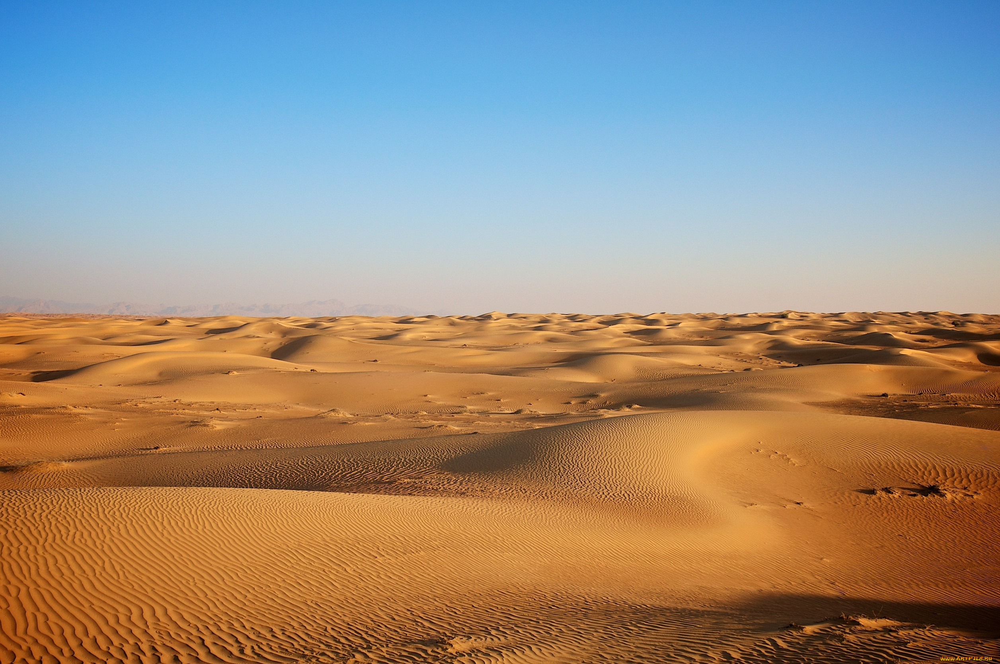

Песочек
Грустная, но поучительная история о песке, да об удалом мальце...

Однажды на окраине Таджикистана в одной маленькой, бедной деревне родился Гаара Джан.
Он родился в небогатой семье и из еды у них был только писок. Они ели совершенно всё из песка.
Время шло, а Гаара Джан стал богаче. Однажды он выйграл 100 рублей в казино, вложил их в биткоин и стал самым богатым в деревне.
Он мог позволить себе абсолютно всё, но одно в его жизни оставалось неизменным, он лубил писок.
Он стал ходить по городу, где не было писка, и говорить: "Гиде Писок?"
- Реальная история.
- Ни одна деревня не пострадала
- Учись как нужно жить и богатеть, как Гаара Джан
- В этой истории нет обмана